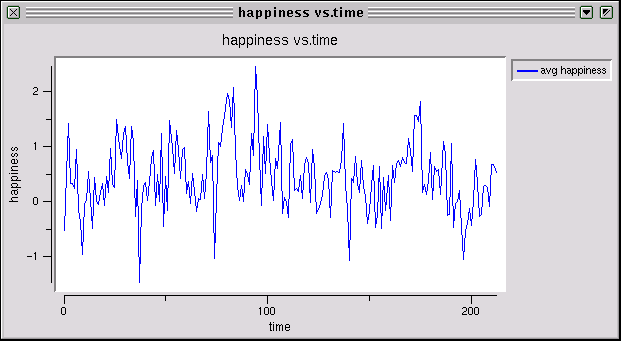
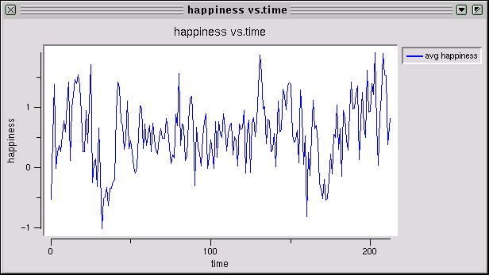
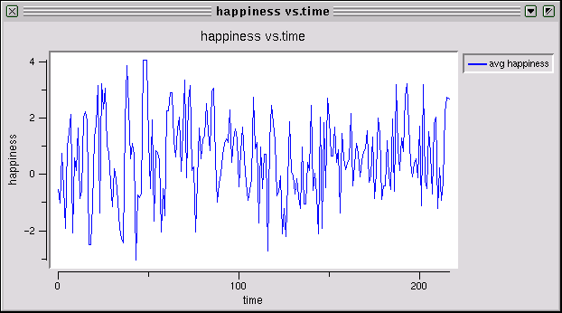
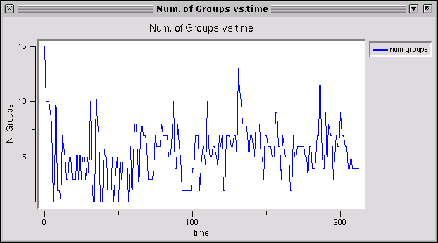
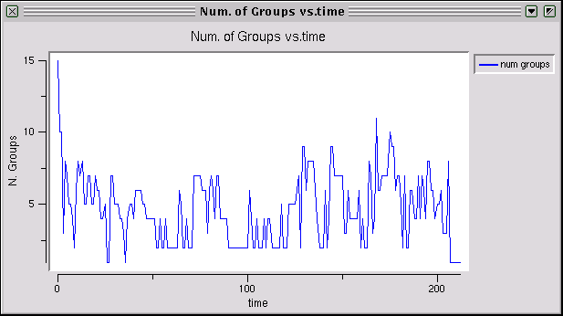
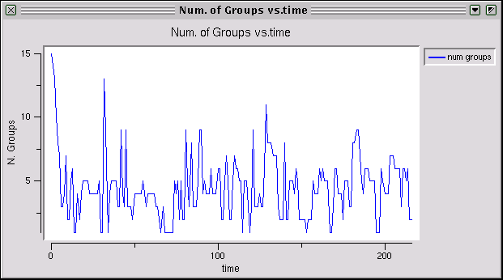

At parties, you talk, eat, drink, and hopefully have fun. At any time, a few people may be found standing alone along the edge of the wall, but the majority are found in little groups scattered around the room. In these groups, you have conversations with fellow partygoers, and these conversations may be interesting or not. If the conversation is bad, you will probably leave, perhaps staying a little while out of politeness before making an excuse, and if the conversation is good, you will likely stay longer, unless you need another drink. If you are alone, or have just left a group, you may choose to join the same one, or another, especially if the people in that group look like they are enjoying themselves. Thus groups form, change and dissolve, as people move around the room.
This webpage contains a model of a party with 21 people. The purpose is to model partygoer decisionmaking in a party, and the resulting formation, perturbation and dissolution of the groups they form.
In this model, people have the following choices. They may
A person's decision is based on how happy he is in his group, as well as his propensity to be alone if he is not. There are other factors, such as thirst, which also affect his choice. The effect of these other factors are modelled by including randomness in his decision.
While in a group, a person's level of happiness depends on the characteristics of the group members, and their resulting interactions.
For partygoer i in N, let i's propensity to be alone be denoted a_i, which is a real number. In the model, this is chosen from a uniform distribution between -5 and 5.
If S is a group or subset of partygoers contained in N, let f denote a function which assigns to each possible subset of partygoers a real number which represents the happiness of the group. The characteristics of f will be defined later. This value is also chosen to be between -5 and 5 uniformly.
When k is one, group happiness is just the average contribution of each group member.
When k is two, group happiness is the average contribution of each possible pair of people in the group (there are k choose 2 pairs), which captures the idea that group member interactions make up group happiness.
A given value of k means that group happiness is the average of the contribution of all size-k subsets of the group when the group is at least as big as k. When the group size is less than k, then the happiness of group G is given by f(G).
Therefore the addition or deletion of a group member will add or drop terms from the calculation of happiness. By the definition of f, the average change is zero, and by an assumption, people do not learn the parameters of f, so this justifies the use of group happiness to choose a group to join.



First, it is clear that happiness varies a lot over time. In all three cases, though, it starts off below 0 and ends up on average above 0, so people become happier as the party progresses. By inspection, people are happiest when k=2. For k=1, everyone's contribution enters into the group happiness calculation. The variance in happiness is due to group size - a few small happy groups add to happiness more than one big happy group, for instance.
For k=2, there is complementarity. People who get along can join the same group, while those who don't can avoid each other. By inspection, average group happiness tends to be higher.
For k=21, happiness depends on the group. Recall that for group sizes less than k, happiness is a function of the whole group, not any average of subgroup contributions, and this is chosen randomly. Nonetheless, on average, it appears that average happiness in the longer run is about the same as that for k=2.
Group sizes also vary over time.



For k=2
For k=21
Group sizes show less variance. Happiness changes with each change in group composition, but group size can stay the same if the same number leave as come in.
The evidence suggests that a higher interconnectedness parameter k results in slightly happier people, and possibly smaller groups. The difficulty with using k large, is that a small change in group composition can result in a drastic change in group happiness, especially when the group size is less than k. This may be unrealistic.
In a mathematical note, if we define a state to be the set of groups at a given time, there are a finite number of states, since the number of partygoers is finite. Since we are using a random utility model, every state can result in everyone being alone, and when everyone is alone, it is strictly possible for any state to follow. Thus the system is ergodic, and an invariant distribution of states exists. With 21 partygoers, there are many states, so calculating the invariant distribution would take a very long time and will not be done.
The data is very noisy. For future research, many more rounds, or the inclusion of some "inertia", in partygoer movement from group to group may result in a better long-term/end of party predictions, or a more realistic model of parties.
A more complete analysis would include testing all different values of k, and the effect of different propensities to be alone on the speed of convergence and the final results.
Applications of this analysis naturally include the formation of networks: social, economic or political.